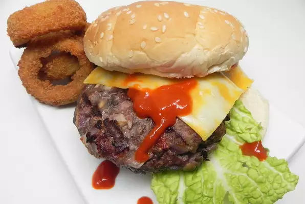

Before we get started you'll need the following ingredients...
LIST OF INGREDIENTS NEEDED
- two lbs of ground beef
- one onion chopped --to perfection!
- three garlic gloves minced
- one tablespoon of italian seasoning
- one teaspoon of salt
- half a teaspoon of ground black pepper
- butter
- Remove ground beef from refrigerator and let stand for 1/2 to 2 hours --the longer the better
- Mix mushrooms, onion, salt, garlic, ltalian seasoning, salt and pepper all on a large bowl
- form mixer into four 1/2 inch thick patties
- butter up an indoor grill pan
- cook patties until brown and no longer pink in the center
note should be about ten minutes per side
- eat up and enjoy with a tall glass of german beer!
to get original recipe click
HERE